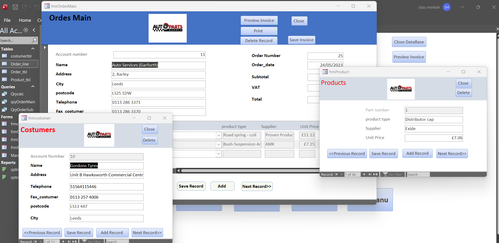

House Price Predictor(HPP)

For my A-level project development module, I conducted an overview studies on how to predict home prices utilising various methodologies such as regression algorithms and Python. The proposed technique is regarded as one of the most advanced components of house price prediction, resulting in a more accurate estimate. It also provides an overview of the many graphical and numerical methods that will be required to forecast the price of a property. My project was incomplete due to a lack of available datasets which was a requirment.
Database
For my A level, I had to create a working database using the Microsoft Access application. I had to employ a collection of tables, relationships, and constraints that define a database's structure. Use normalisation to divide a large table into smaller tables and create links between them. A well-designed user interface that is clear, easy to use, and adaptable to the needs of different users. Furthermore, in order for users to engage with the database's data, the user interface must have capabilities such as search, sorting, filtering, and reporting.